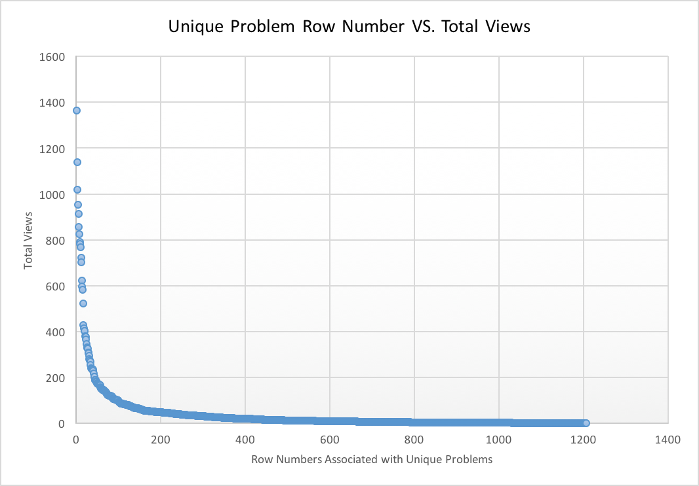

Welcome to Team 1's KDD Cup Project Website!
This project is for Professor Ding's Spring 2016 Applied Machine Learning course at UMass Boston.
About Us
Daniel Manning - Undergraduate Student - daniel.manning001@umb.edu
Iman Rezaei - Undergraduate Student - rimanmk@gmail.com
Jie Qian - Graduate Student - jie.qian001@umb.edu
Fei Wu - Graduate Student - wufei523@gmail.com
Problem Description
The description should include keywords identified from current job openings on data science and machine learning. Here are some buzzwords we found so far that applies to our project:
- predictive modeling
- data analysis
- educational data mining
- strong visualization skills
- statistical analytics
Data Description
The data set used in our project is based on Algebra I 2005-2006 from KDD Cup 2010: Educational Data Mining Challenge. We have applied multiple levels of filtering to exclude data we see as unnecessary to train our models.
Filter 1: Duration Time
Through data analysis, we have found that 95% of students spend at most 105 seconds on each interaction step.
We have excluded interaction steps that exceed this number; perhaps the students spending too much time are
preoccupied with doing other things. Therefore, these steps' Correct First Attempts (CFAs) are not as convincing
as other samples. The following histogram shows this phenomenon:
Because a step duration of 0-105 seconds covers 95% of interaction steps, such a step duration is likely to be
included in the test data.
The algorithm is applied in Source/DurationTimeFilter.py, and outputs to file, "traindataNoDuration.csv". This file contains 769,300 interaction steps (~95% of original data set).
Filter 2: Problem Frequency
For our second filter, some small feature engineering is applied to categorize each unique problems by string
concatenating problem hierarchy with problem name. For example:
| Problem Hierarchy | Problem Name | Unique Identifier |
| Unit ES_04, Section ES_04-1 | EG40 | Unit ES_04, Section ES_04-1;EG40 |
As a toy example to explain the above formula, consider the following:
| Unique Problem | Total Unique Problem View |
| Unit CTA1_06, Section CTA1_06-4;L6FB07 | 80 |
| Unit CTA1_02, Section CTA1_02-2;BH1T35B | 42 |
| Unit CTA1_02, Section CTA1_02-2;BH1T21C | 19 |
(80 + 42) / (80 + 42 + 19) = 87%
If these Unique Problem Identifiers were sorted by their Problem View Total, the following graph is generated:
As you can see above, most of the problems have a Problem View Total between 0-150.
The algorithm is applied in the following files:
Source/UniqueProbsTotalViews.py
Source/UniqueProbViewFilter.py
Source/traindataFilteredByView.py,
and outputs to file, "filteredProbByView20.csv". This file contains 616,977 interaction steps (~80% of filter 1 data set, "traindataNoDuration.csv").
Machine Learning Methods
Provide detailed discussion and illustration examples for the machine learning method(s) used for the project.
Github Repository
Click the button below to visit the online code repository on Github.
MLKDD on GitHub